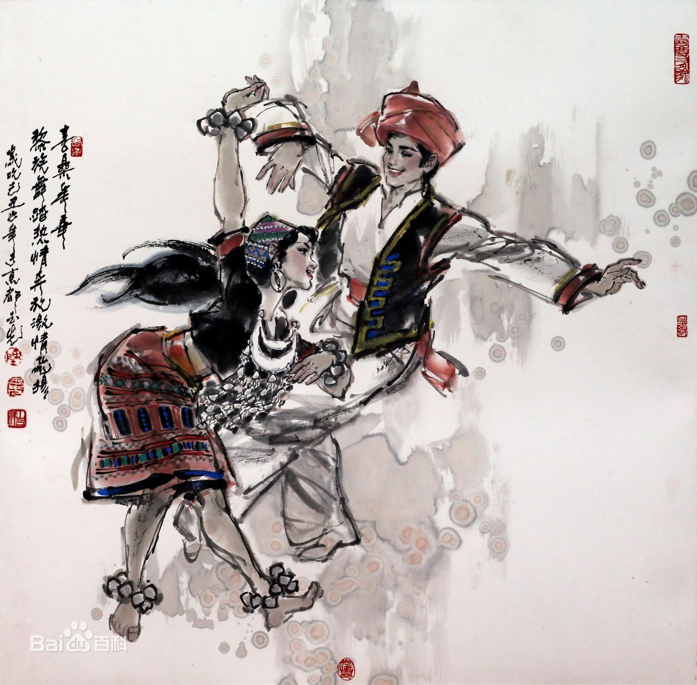

- 民族简介
- 文化习俗
- 历史发展
- 旅游介绍
黎族
黎族，是海南岛最早的居民，黎族语言属汉藏语系壮侗语族黎语支。大多数黎族人都能兼说汉语，过去黎族没有本民族文字，通用汉文，1957年在党和政府帮助下创制了以拉丁字母为基础的黎文，信仰仍处在原始宗教阶段。 黎族主要聚居在海南省的陵水、保亭、三亚、乐东、东方、昌江、白沙、琼中、五指山等县市，其余散居在海南省境内的万宁、儋州、屯昌、琼海等县市以及贵州等省。 根据2010年第六次全国人口普查统计，黎族总人口数为1463064人 。
黎”是他称，是汉民族对黎族的称呼。西汉以前曾经以 “骆越”，东汉以“ 里”、“蛮”，隋唐以“俚”、“僚”等名称，来泛称南方的一些少数民族，其中也包括海南岛黎族的远古祖先。 “黎”作为今天黎族的族称，最早见于唐后期刘恂著的《岭表录异》一书。该书有“儋、振夷黎，海畔采（紫贝）以为货”的记载。另外，《新唐书·杜佑传》卷179中有唐德宗年间（780—805年）“朱崖黎民三世保险不宾，佑讨平之”的记载。但《新唐书》为宋人欧阳修所作，“黎”之称应以《岭表录异》的记载为最早。宋代，各类史籍中普遍以“黎”代替了“俚”、“僚”，作为今天海南岛黎族的专有族称。 黎族称汉族为“美”，意即“客”，他们以汉人为客人，自己则以土著自居。黎族内部因方言、习俗、地域分布等差异有“哈”（过去作“侾”）、“杞”（又称“岐”）、“润”（过去汉称“本地”黎）、“美孚”、“赛”（过去称“德透”黎或“加茂”黎）等不同的自称，但在对外交往时一般都自称为“赛”，赛是其固有的族称 
信仰
黎族传统社会尚未形成完整的宗教体系，处在原始宗教阶段。 黎族信奉万物有灵，盛行图腾崇拜、自然崇拜和祖先崇拜。从事宗教活动的巫师称为“道公”、“娘母”，他们一般不脱离生产，在需要时才主持送鬼、占卜等活动。除道教在黎族社会中影响较大外，佛教、基督教等外来宗教影响有限。 黎族普遍相信巫术，认为巫术能使人害病死亡。被诬指行使这种巫术的人，男性叫“禁公”，女性叫“禁母”。新中国建立前，“禁公”、 “禁母”往往受到别人的歧视和惧怕。 黎族传统禁忌很多，涉及生活、生产、生育、节日、丧葬、婚姻、宗教、狩猎等方面，新中国成立后，这方面的情况已发生较大的改变 。
建筑
黎族传统民居多是简陋的茅草房，在五指山腹地住传 统的船形房屋，船形屋以竹木扎架，用茅草覆盖，以藤条或竹做地板，离地约半公尺左右。
服饰
黎族传统服饰文化内涵丰富，各方言区 差异比较明显（尤其是女子服饰），在历史上曾经是区分不同血缘集团和部落群体的重要标志。 在传统服饰中，黎族妇女常穿直领、无领、无纽对襟上衣，有的地方穿贯头式上衣，下穿长短不同的筒裙，束发脑后，插以骨簪或银簪，披绣花头巾，戴耳环、项圈和手镯。 男子传统装束一般结发于额前或脑后，上衣无领、对胸开襟，下着腰布（吊襜），部分美孚黎男子上衣与女子无多大分别。 在哈、杞、美孚、润黎少数健在的老年妇女中还一直保持着传统的文身习俗 。
饮食
黎族一般日食三餐，以大米为主，“山 栏”香米是黎区特产。 把生鱼、肉掺以炒米粉，加入少许食盐，用陶罐封存制作而成的肉茶、鱼茶是黎家腌制的特色风味食品。 黎族男子喜好烟、酒。 槟榔是妇女的嗜品，吃时和以贝壳灰，用一种青蒌叶包着吃，吃后口唇染红 。
历史
关于黎族的族源，过去有多种不同见解。新中国成立后，中国学者根据文献记载，结合大量的考古学、语言学、民族学资料和前人的研究成果，多数人认为，黎族是从古代越族发展而来，特别是和“百越”的一支——“骆越”的关系更为密切。 20世纪50年代以来，海南黎族聚居区发现了大量的新石器时代文化遗址。从出土文物的文化性质分析，它们和广东及东南沿海地区发现的、带有鲜明百越文化特征的新石器文化，应同属一个文化系统，特别是与广西钦州地区、广东湛江地区发现的原始文化遗存更为相似。
此外，作为百越文化重要特征的铜鼓，明代以后，海南岛就有出土。新中国成立后，在黎族地区也发现了许多铜鼓，它们和广西地区发现的铜鼓在形制上基本相同。 从语言系属来看，黎语与源于古代越族的壮、布依、侗、水、傣等族语言同属于汉藏语系壮侗语族，在语音、语法和词汇上都有显著的共同特征，说明其与壮、布依、侗、水、傣等民族有密切的渊源关系。 古越人生活习俗上的许多特点，如：断发文身、鸡卜、巢居等，不仅见于有关黎族先民的历史文献记载中，甚至在海南黎族人的现实生活中也不难发现它们的痕迹。如至今仍然存在的黎族妇女文身、白沙南开一带的干栏式船形屋、鸡卜等都是古越人的遗风。在婚俗方面，黎族和壮、侗等民族都有“不落夫家”的习俗，黎族的“玩隆闺”与壮族的“玩公房”、侗族的“坐妹”也有近似之处。
绪十八年（1892年），清政府鉴于地处边疆的拉祜族地区政治、经济地位日益重要，为加强拉祜族地区的统治，在拉祜族较集中的双江、澜沧、孟连等地实行改土归流。到清末，拉祜族已经基本形成如今的分布格局。随着帝国主义的入侵，1934年拉祜、佤等族农民粉碎了英帝国主义侵占班洪的可耻阴谋。以后，拉祜等族人民还展开了反对日本帝国主义入侵和帝国主义宗教特务的斗争。
解放战争时期，在党的领导下，拉祜族人民纷纷加入当地游击队，展开对国民党统治的斗争。
椰田古寨
椰田古寨保存着黎族先民飘洋过海的历史印迹和文化记忆，既有大自然鬼斧神工的自然奇迹，又有厚重沉淀的具有上古遗风的钻木取火，黎族织锦等多项国家非物质文化遗产，更有刻于血肉之躯的古老文化遗存——黎族最后一代的纹脸纹身阿婆。在独特的金字屋，船形屋和寮房中能看到勤劳勇敢，淳朴善良黎族人民亲手制作的手工艺品和特色小吃。